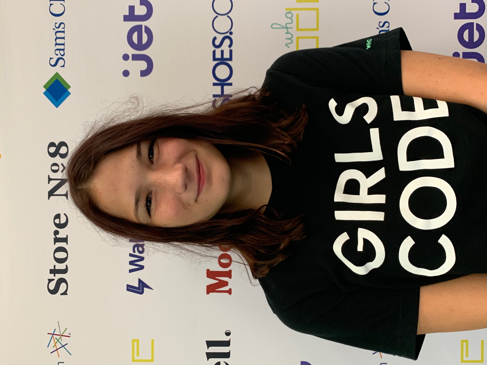
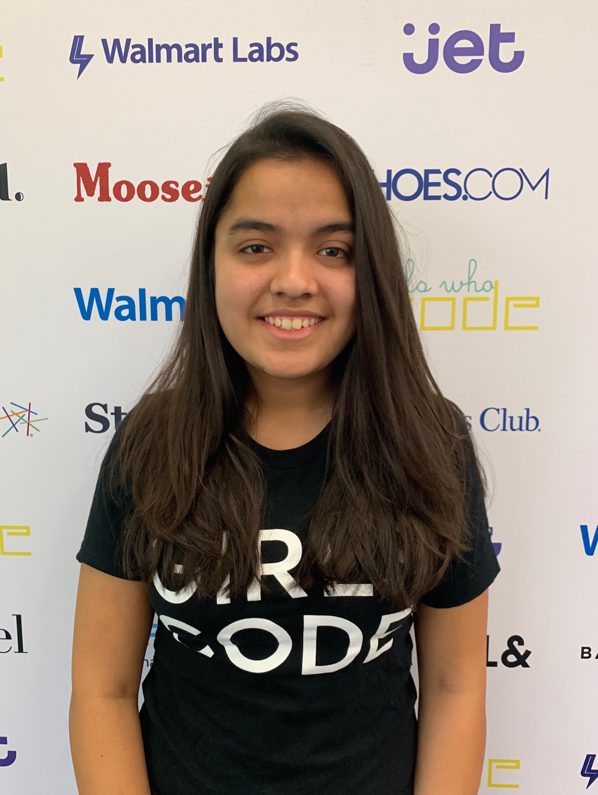
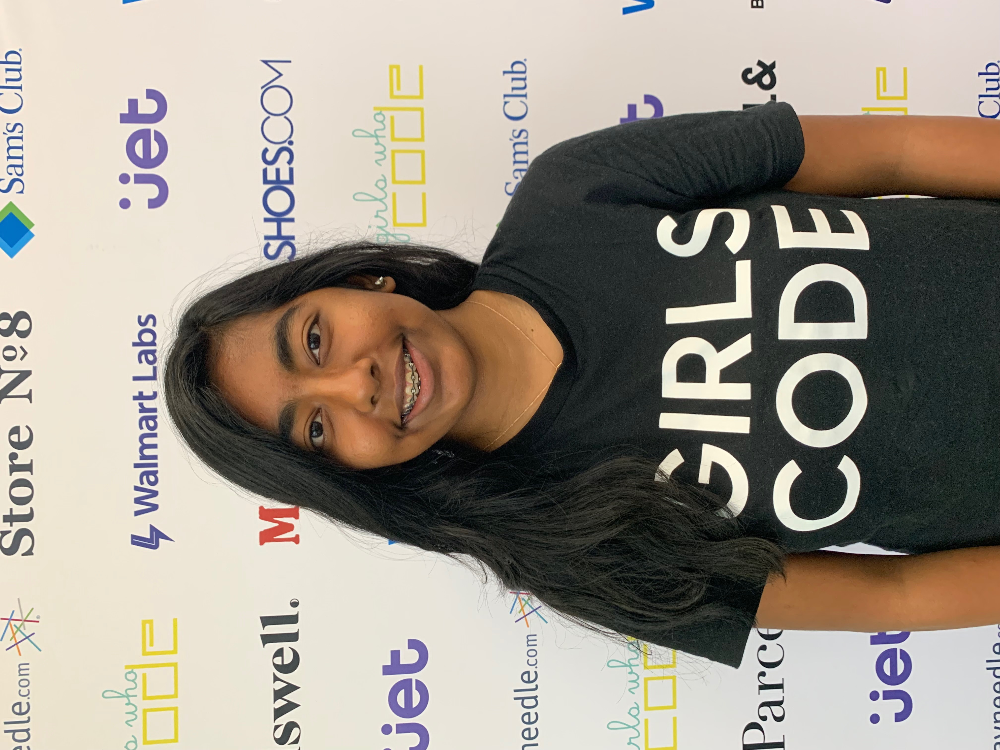

About Us
|  |  |  | |
Hi! My name is Calico Taylor and I’m a junior at Pea Ridge High School. I chose to work on this project because I believe everyone should be able to be informed about how they can impact their community, and I enjoy the design aspects and organization of creating a website. |
Hey! My name is Shiuli Batra. I am a junior at Haas Hall Academy Bentonville. I chose to work on this particular project because I have an interest in the field of politics and really liked the idea of spreading awareness about it to the public and it helped me learn a lot about web design. |
Hello! My name is Deeksha Shanmuganathan. I am a junior at Haas Hall Academy Bentonville. I wanted to use this project as an opportunity to get familiar with it and also help create something that would help other people be informed about the field as well. |
Hi! My name is Isabelle Paulsen and I am a junior at Iowa City West High. I chose to work on this project because I love web development and coding, and I wanted to work on something that could really make a difference. One day I hope to do something similar to this project. |
Contact Us